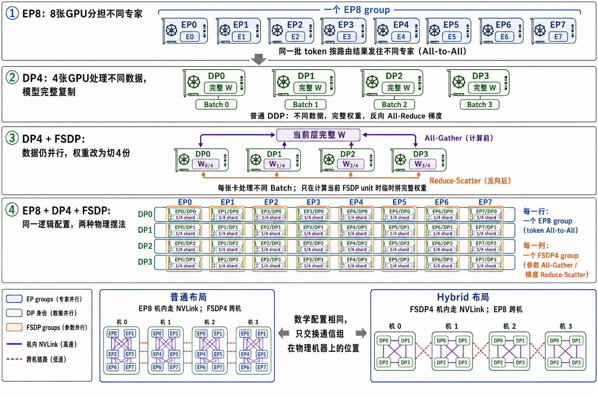

从 EP8 到 Hybrid EP
一篇把 rank、参数 ownership 和物理网络放在同一张图里的学习笔记。目标不是背术语，而是看清：谁拥有 expert、谁拥有参数 shard、哪一种通信最终穿过 NIC。
01 · EXPERT OWNERSHIPEP8 到底切的是什么？
EP8 不是只有 8 个专家，也不是每个 token 激活 8 个专家。它表示把全部 routed experts 分配给 8 个 EP coordinates。若模型有 256 个专家，均匀分配且不考虑冗余：
02 · DATA OWNERSHIPDP4：切的是数据，不是 expert 列表
普通 DDP
4 个 DP ranks 处理 4 份不同 Batch；每个 rank 常驻一份完整模型，Backward 后 All-Reduce 梯度。
DP0: Batch0 + 完整 W DP1: Batch1 + 完整 W DP2: Batch2 + 完整 W DP3: Batch3 + 完整 W
DP 是计算语义
“数据并行”只规定每个 rank 处理不同数据，并不强制权重必须永久完整复制。权重怎么存，由 DDP、ZeRO 或 FSDP 决定。
固定不变：每个 DP rank 处理不同 Batch 可以改变：参数 / 梯度 / 优化器状态的存储方式
03 · PARAMETER OWNERSHIPDP4 + FSDP：仍然数据并行，但参数常驻为 1/4
平时
每个 rank 只保存当前 FSDP unit 参数、梯度和优化器状态的一片。
DP0: W[0/4] DP1: W[1/4] DP2: W[2/4] DP3: W[3/4]
计算前
4 个 rank 逐层 All-Gather 当前 FSDP unit；每个 rank 临时得到完整的当前层参数。
W[0/4] + W[1/4]
+ W[2/4] + W[3/4]
→ 当前层完整 W反向后
梯度 Reduce-Scatter，再次回到每个 rank 只持有 1/4 shard 的状态。
完整 gradient → G[0/4], G[1/4], G[2/4], G[3/4]
04 · ONE DOMAIN, TWO FACTORSconfigured FSDP32 + EP8，不是 32 × 8
assert fsdp_size % ep_size == 0 expert_fsdp_size = fsdp_size // ep_size configured FSDP32 + EP8 → expert-FSDP size = 32 / 8 = 4
Dense / Attention 参数
没有 expert coordinate，仍由全部 32 ranks 执行 FSDP32。Hybrid 的 expert mesh 重排不会让 dense 的跨机通信消失。
Expert 参数
先由 EP8 把 expert 列表分成 8 组，每组 32 experts；每一组的参数再由 expert-FSDP4 切成 4 个 shards。

05 · INTERACTIVE RANK MESH4 行 × 8 列：先看 group，再看 node
06 · TOPOLOGY EXCHANGE普通布局与 Hybrid 布局交换了什么？
普通布局 · 一台机器放一整行
EP8：机内 NVLink
expert-FSDP4：跨 4 台机器
token 不出节点；计算前通过跨机 FSDP 拉回缺失 expert 参数。
Hybrid · 一台机器放两整列
expert-FSDP4：机内 NVLink
EP8：跨 4 台机器
expert 参数留在所属节点；token 跨机去找 expert。
| 观察项 | 普通布局 | Hybrid 布局 |
|---|---|---|
| 每台机器拿到的 rank | 固定一个 DP coordinate，拿 EP0–EP7 | 固定两个 EP coordinates，各拿 DP0–DP3 |
| 机内高速通信 | EP token All-to-All | expert 参数 All-Gather / 梯度 Reduce-Scatter |
| 跨机 NIC 通信 | expert-FSDP4 | 稀疏 token dispatch / combine |
| 对一台机器的直觉 | 本地 P/4，跨机拉回缺失 3P/4 expert weights | 只计算本地 1/4 experts；远端 token 发往远端 expert |
07 · BREAK-EVEN MODEL什么时候值得把 EP 放到跨机方向？
真正要比较的是关键路径上的跨机时间。下面的计算器只做数量级预估：参数侧按 FSDP4 的两次参数 All-Gather + 一次梯度 Reduce-Scatter；token 侧按训练期 dispatch/combine 及其反向通信估算。
参数特别大、token 相对少
更偏向 Hybrid：把巨大的 expert 参数 collectives 留在 NVLink 域，跨机只发送稀疏 token。
token 特别多、top-k 高或路由失衡
更偏向普通布局：跨机 All-to-All 可能成为尾部瓶颈，尤其当 DeepEP 有效带宽和 overlap 不理想时。
exposed communication time。All-Gather 与稀疏 All-to-All 的有效带宽、消息延迟、NIC 争用、路由不均衡和通算 overlap 都不同。静态公式用于筛选，最终用真实训练 step、tokens/s、MFU 和 Nsight 时间线决策。08 · MEMORY HOOKS最后用四句话锁住概念
EP8
切 expert 列表：256 experts → 8 组，每组 32 experts。
expert-FSDP4
切每组 expert 参数：同一组 32 experts 的权重 → 4 个参数 shards。
普通布局
一台机器放一整行：EP 本地，expert-FSDP 跨机。
Hybrid布局
一台机器放两整列：expert-FSDP 本地，EP token 跨机。
REFERENCES进一步阅读
| PyTorch FSDP | 参数 All-Gather、梯度 Reduce-Scatter 与 Hybrid Shard |
| Megatron-FSDP | FSDP 与 EP 的 DeviceMesh / expert 参数组 |
| SGLang EP | 推理侧 EP dispatcher 与后端 |
| DeepEP | 高吞吐与低延迟 token dispatch/combine |